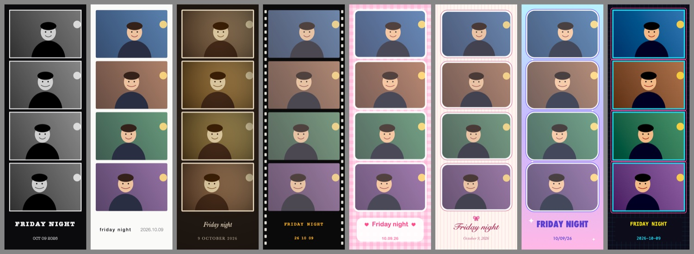
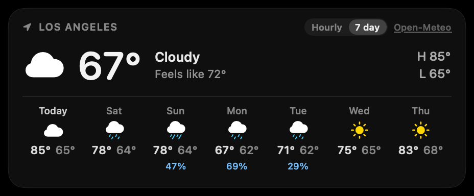
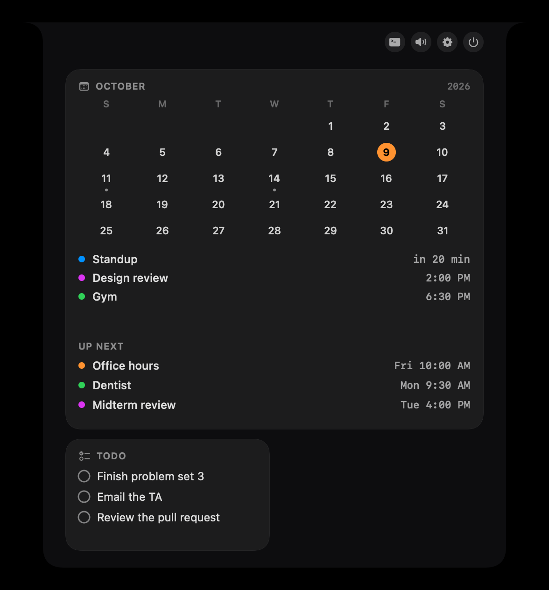
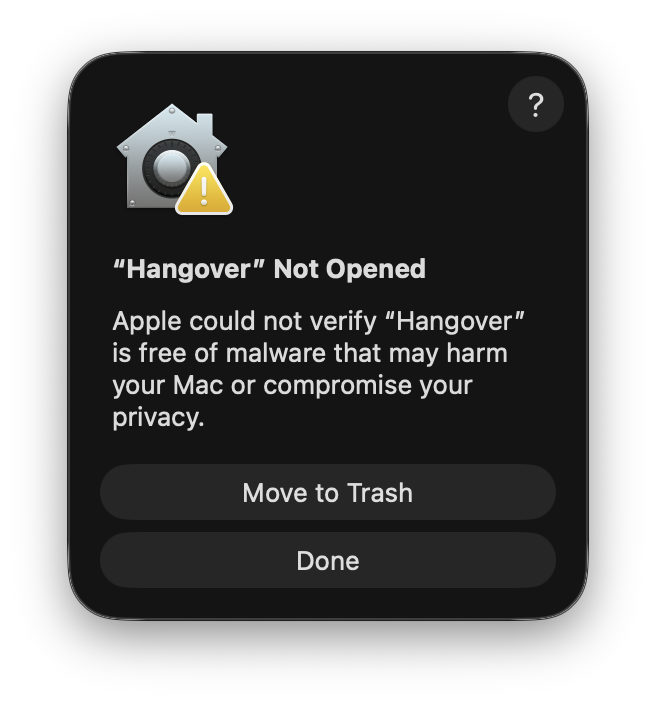
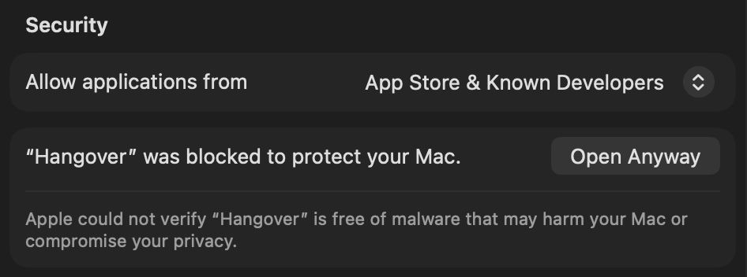

Hangover puts your music, your day and your files in the MacBook notch.
Point at the notch and it opens. Move away and it closes. It's free, the code is open, and it keeps itself up to date.
Download for Mac
Apple silicon, macOS 14 or later

What's in it
- Music
- Play, pause, skip and pick the speaker without leaving what you're doing.
- Calendar
- What's next today, with a heads-up in the notch before it starts.
- To-dos
- From Reminders, Notion or TickTick. Check one off right there.
- Quick notes
- Type a line and press Return. It goes to a Markdown file or to Apple Notes.
- File tray
- Drop a file on the notch and drag it back out when you need it.
- Timer
- A focus timer. The closed notch shows the time left.
- Weather
- Now, the next hours and the week.
- Mirror
- A camera check before a call. It's also a photo booth.



Use coding agents like Claude Code or Codex? Hangover shows what they're doing and lets you answer them from the notch. That part comes from Open Island, and you can switch it off.
Opening it the first time
macOS stops any app that didn't go through Apple's paid developer program, and Hangover is free. You'll see a warning once. Here is what to click.
- Open Hangover.zip from your Downloads, then drag Hangover into your Applications folder.
- Double-click Hangover. macOS shows this warning. Click Done. Don't click Move to Trash.

- Open System Settings, go to Privacy & Security and scroll down to Security. Click Open Anyway, then confirm with your password or Touch ID. The button stays for about an hour.

- That's it. From now on it opens like any other app.
Only do this with a copy you downloaded from this page, and leave Gatekeeper on. Apple explains the same steps in Open a Mac app from an unknown developer.